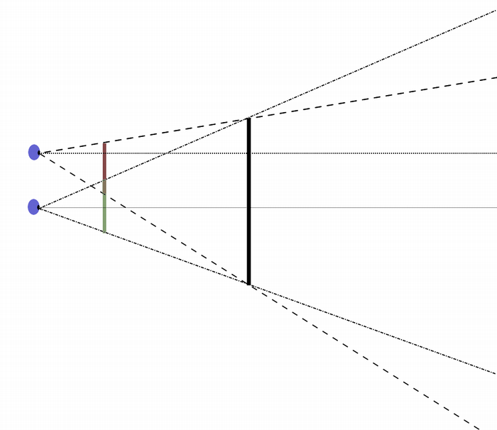
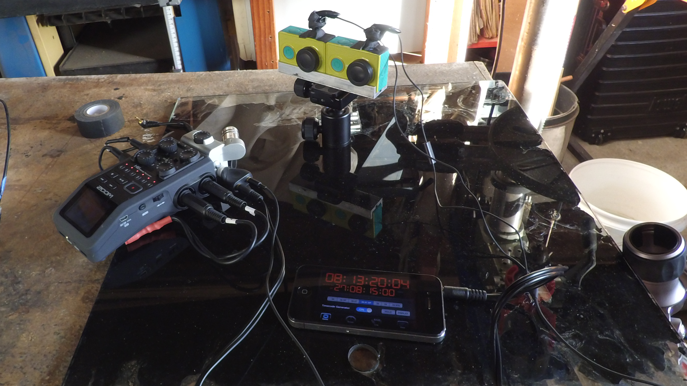

Sync
Synchronizing my two cameras was an issue. Sync is very important in any stereo viewer. Any differences between the images presented to the eyes is noticeably uncomfortable for the viewer. The kinds of issues are temporal differences, color shifts, alignment particularly in the vertical dimension, and the frame edges where a single eye sees something the other does not

My cameras, the low budget Xiaomi Yi Action Camera, currently has no capacity for any kind of syncing: no timecode genloc or global shutter, no capacity to start multiple cameras or work multiple shutters at once outside of hard wiring a switch on to the contacts. I may still do this. One reason I haven’t is that it’s kind of invasive and I’d want it plugable and have not found a plug that seems suitable. And when I go to add cameras to the array that’s more soldering and I’m not great at that. Plus- the hard wired switch does nothing to sync the audio on my recorder to the camera array.
For the moment I have been using two methods for sync.
Clapper
My first approach is simply shoot at high frame rate (60fps or better) and use the ‘clapper’ technique. Tried and true it works pretty well for both cams and the audio. A solid block clapped against my phone works better than a hand clap visually, but in both cases the visual representation of the audio waveform is the main way to line up the clips. Actually the clapper was not my first approach. Since I was not considering audio initially, first I tried showing my camera a timecode app running on my phone and using this to visually line up the clips, but this wasn’t easy enough.
60fps or better I think is a requirement. I’ve not tested this to confirm, but I feel pretty certain 30fps will not have the temporal frequency to get good-enough alignment for this purpose, just based on my professional experience (15 years of stepping through footage at 24fps)
LTC AKA ‘Lit See’
Another technique I started using is to pump in Linear timecode (LTC) from my phone to the two cameras and my recorder. This seems to work well and so far seems pretty reliable. LTC is a timecode signal encoded in audio format and dates back to the age of magnetic tapes. The iphone app I’m using to generate the LTC signal is the Denecke TimeCode ToolBox app (free).
Using one of those headphone splitters, I am taking the signal out of the phone and send one signal to the recorder in the LR channel 1/8” jack and send the other to a pair of ear buds which are gaff taped to where the mic is on the the xiaomi yi cam.

Editing Stereo Clips
For editing my clips, I’ve moved through a few things. I started wanting to not sign up for Adobe Creative Cloud. I just don’t feel great about the subscription model. I don’t want to pay them monthly forever in order to open the files I make today….
Initially I went with ffmpeg and worked up some basic python to cut my clips at a TC established visually. This had the advantage of not re-encoding the data from the camera with the ffmpeg copy flags, but the workflow was a little clunky. I also tried MPEG Streamclip, which has a viewer that could be used to find a sync frame and mark, and also the ability to save mp4 without re-encoding. But both approaches didn’t support other editing operations which I knew I’d need eventually, so I kept exploring.
I’m fortunate to have Nuke Studio through my job. Nuke is great. Nuke Studio adds the editing functions from foundry’s Hiero product into a single interface. Unfortunately I couldn’t get it to work reliably with the export, and not for lack of trying. I decided to put it aside for now and revisit later.
Which means I gave into the Adobe CC and Premiere Pro CC is what I’ve been using to edit with lately. I have to admit, it’s good and I’ve missed photoshop and Premiere is pretty nice looking now. There are some great sync functions they’ve added, including one where a marker is placed on all the clips and then aligned using it and another where the audio waveform is analyzed on all the clips and aligned, similar to what Plural Eyes does.
In Premiere, I am using the multicamera workflow and the sync by timecode option for my clips and audio with LTC, and it seems to recognize the LTC and aligns everything nicely. Totally good enough for now.
I’m hopeful a usb-wired or wireless control of these cameras can be found that starts and triggers the cameras with a good degree of tolerance, then I could put together a controller and possibly even get some test images back to confirm all cameras are working as expected before a capture.
this gopro project has me optimistic that something might be possible there
https://github.com/evilwombat/gopro-usb-tools